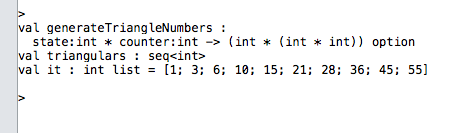

Duration
10 minutes
Lab goals
The primary goal of this lab is to build upon our knowledge of option types and to gain a deeper understanding of how to use tuples and sequence operations when writing F# code. We will be writing a function that creates triangular sequence of numbers.
- Write a function using a tuple holding the current state of a sequence and a counter.
- Use this function to create a sequence.
- Experiment with different sequence operations


Steps
Create a triangular sequence of numbers
Our goal is to build a successful sequence of triangular numbers
- Create a new F# library project and open the script.fsx file.
- Write a function that takes a tuple holding the current state of the sequence, and a counter containing the next number to add. Hint: This function should return an option type.
- Use this function to create a sequence, don't forget to add a starting value.
- Select the code and press ctrl > return to test it in the REPL. Experiment with different sequence operations to verify your code.
Summary
During this lab you have built upon your knowledge of option types to create a sequence of triangular numbers